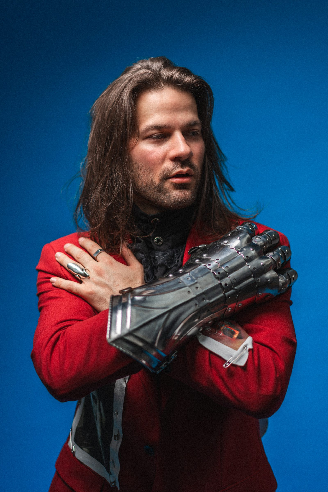

Alternative Rock mit einem Classical Piano Edge
3 Mio.+ Streams. Ausverkaufte Shows im Lido und Kesselhaus. Keine Coverband, sondern ein echtes Live-Erlebnis für euer Event.
TRUSTED BY · FEATURED ON
Ihr sucht einen Live-Act für euer Event? beranger ist ein Live-Alternative-Rock-Act mit klassischem Klavier-Edge, buchbar als Solo-Piano oder Full Band, inklusive eigener Technik, verfügbar international in Deutschland, der DACH-Region und ganz Europa. Keine austauschbare Partyband und kein DJ, sondern ein Künstler mit Millionen Streams, über den eure Gäste noch lange sprechen.
Live
Hands Go High | Official Video
Kaleidoscope | feat. Casio Privia
Live at Lido Berlin
Slipping Under | Shure Session
Kaleidoscope | Official Video

Der Artist
beranger verbindet klassisches Klavier mit der Energie von Alternative Rock (Linkin Park, Muse, Panic! At The Disco). Von den Anfängen als Straßenmusiker bis zu ausverkauften Shows im Kesselhaus und Lido, Auftritten beim Lollapalooza und im Festsaal Kreuzberg. Zusammenarbeit mit Michael Ilbert (Muse, Coldplay) und Moses Schneider (AnnenMayKantereit, Beatsteaks), dazu Videos mit der Klaviermarke Casio und Features von Shure. Hinter den Millionen organischer Spotify-Streams steht eine Live-Show, die im Gedächtnis bleibt.
Buchbar
Elegant und intim. Perfekt für Trauung, Empfang und Dinner. Klassisch ausgebildet, mit individuellen Arrangements eurer Lieblingssongs.
Die energiegeladene Live-Show. Der Headliner für Feier, Party oder Firmenevent, mit dem Sound der ausverkauften Konzerte.
Auf Wunsch filmen wir euren Auftritt professionell mit Sony ZV-E1, Gimbal und Schnitt. Hochwertige Aufnahmen für die Erinnerung und für Social Media.
Technik
Wir bringen unsere komplette eigene Technik mit, ihr müsst euch um nichts kümmern. Auf Wunsch filmen und nehmen wir euer Event auf.
Vergleich
| Kriterium | beranger | Coverband | DJ | Legacy-Act |
|---|---|---|---|---|
| Echter Artist, 3 Mio.+ Streams | Ja | Nein | Nein | Unterschiedlich |
| Klassische Klaviervirtuosität | Ja | Nein | Nein | Nein |
| Unvergesslicher "echter Artist"-Faktor | Ja | Nein | Nein | Ja |
| Solo-Piano bis Full Band | Ja | Begrenzt | Nein | Nein |
| Bringt eigene PA & Backline | Ja | Teils | Ja | Nein |
| Filmt euer Event | Ja | Nein | Nein | Nein |
FAQ
Ja. beranger bringt die komplette eigene Technik mit: eine professionelle PA (QSC K12), ein Nord Piano 3, Mischpult, Shure-Mikrofone, Gitarre, Bass und ein komplettes Schlagzeug. Auf Wunsch wird das Event mit einer Sony ZV-E1 gefilmt und aufgenommen.
beranger ist ein Live-Alternative-Rock-Act mit klassischem Klavier-Edge, buchbar als günstigeres Solo-Piano-Set oder als Full Band, mit eigener Technik, verfügbar international in Deutschland, der DACH-Region und ganz Europa.
Alternative Rock mit einem klassischen Klavier-Edge, im Geist von Linkin Park, Muse und Panic! At The Disco, dazu elegantes Solo-Piano für ruhige Momente.
beranger ist ein echter Recording-Artist mit 3 Mio.+ Streams, ausverkauften Shows (Lido, Kesselhaus), Features mit Casio und Shure und einem Auftritt beim Lollapalooza. Gäste erinnern sich an einen echten Artist, nicht an eine austauschbare Coverband oder einen DJ.
Die Basis ist Berlin, verfügbar international in ganz Deutschland, der DACH-Region (Österreich, Schweiz) und Europa, inklusive Frankreich und Großbritannien.
3.000.000+ StreamsLollapaloozaFestsaal KreuzbergLido & KesselhausFeatured von Casio & Shure
Ich sende Verfügbarkeit und ein individuelles Angebot innerhalb von 24 Stunden.
Angebot anfragenBuchung
Bitte teilt uns Datum, Location, Art des Events, Budget und ungefähre Gästezahl mit. Ihr bekommt innerhalb von 24 Stunden eine Antwort.